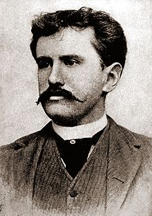

Chiếc lá cuối cùng
Chiếc lá cuối cùng (The Last Leaf) là một trong những truyện ngắn hay của nhà văn
nổi tiếng người Mỹ O.Henry
Tóm tắt nội dung

Sue (phiên âm: Xiu) và Johnsy (phiên âm: Giôn-xi) là 2 nữ họa sĩ trẻ sống trong 1
khu nhà trọ. Cụ Behrman (phiên âm: Bơ-men) là một họa sĩ già cũng sống ở đó; cả đời
cụ khao khát vẽ được một kiệt tác nhưng chưa thực hiện được. Mùa đông năm ấy, Johnsy
bị bệnh sưng phổi rất nặng. Bệnh tật khiến cô tuyệt vọng và nghĩ rằng khi chiếc lá
thường xuân cuối cùng rụng xuống là sẽ là lúc cô lìa đời. Sue vô cùng lo lắng và hết
lòng chạy chữa cho bạn nhưng vô ích, Johnsy vẫn bi quan như vậy. Cô gái tội nghiệp âm
thầm đếm từng chiếc lá thường xuân. Biết được ý nghĩ điên rồ đó của Johnsy, cụ Behrman
ban đầu mắng um lên nhưng sau đó lại âm thầm thức suốt đêm mưa gió bão bùng để vẽ chiếc
lá thường xuân. Chiếc lá cuối cùng giống như thật. Nó đã không rụng trong đêm bão lớn
khiến Johnsy suy nghĩ lại, cô hi vọng và muốn được sống, được sáng tạo.
Johnsy từ cõi
chết trở về nhưng cụ Behrman lại chết vì bệnh sưng phổi sau đêm sáng tạo kiệt tác chiếc
lá cuối cùng để cứu Johnsy. Sue lặng lẽ đến bên Johnsy báo cho bạn về cái chết của cụ
Behrman và bí mật của chiếc lá cuối cùng.